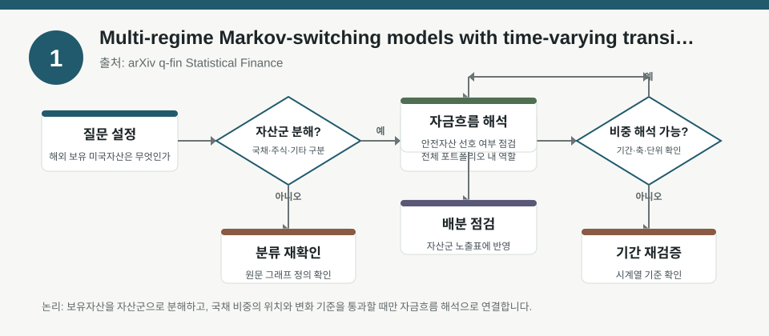
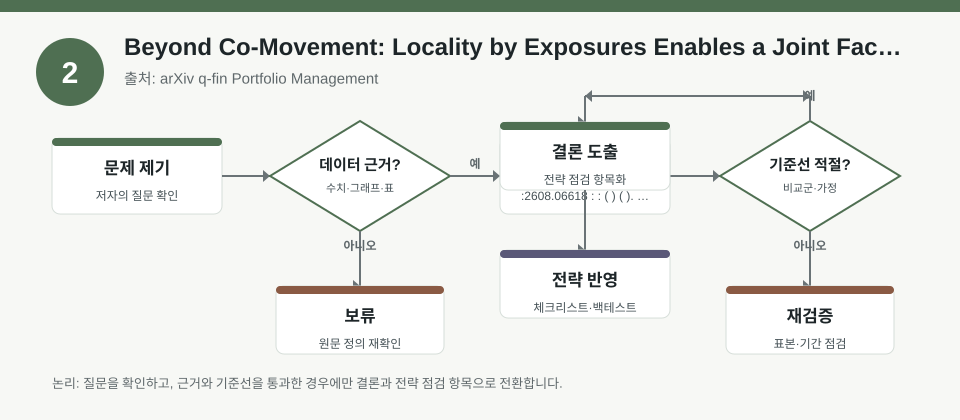
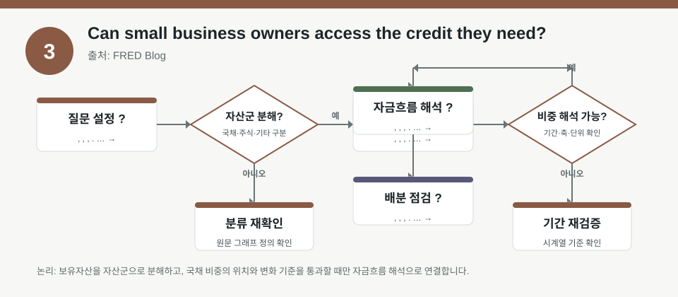

핵심 요약
- 결론: 이번 3개 자료는 금리 국면 전환, 팩터-그래프 기반 분산, 신용 접근성 차이를 통해 “리스크를 어떻게 나눠 보고 검증할지”를 강조합니다.
- 원칙: 수치와 성과 해석은 원문에서 확인하고, 한국 투자자는 KOSPI/KOSDAQ 업종 노출·환율 민감도·금리·인플레이션·신용/규제 리스크 점검표로만 활용하는 편이 안전합니다.
주목할 자료
| 번호 | 자료 | 출처 | 원문 | 핵심 내용 | 데이터 포인트 | 리스크/한계 |
|---|---|---|---|---|---|---|
| 1 | Multi-regime Markov-switching models with time-varying transition probabilities: An application to U.S. Treasury yields | arXiv q-fin Statistical Finance | 원문 보기 | 국채금리의 국면 전환을 TVTP가 있는 마코프 스위칭으로 설명하며, 금리 환경 변화 감지에 초점을 둡니다. | 국면 전환확률, 체제별 변동성, 금리 민감도, 추정 안정성 | 표본 구간·모수 설정·국면 수에 따라 결과가 달라질 수 있어 원문 추정식과 검증 구간을 확인해야 합니다. |
| 2 | Beyond Co-Movement: Locality by Exposures Enables a Joint Factor-Graph Framework for Portfolio Diversification | arXiv q-fin Portfolio Management | 원문 보기 | 팩터 노출과 그래프 구조를 결합해 상관만 보지 않는 분산투자 프레임워크를 제안합니다. | 팩터 익스포저, 로컬리티, 분산효과, 포트폴리오 구성 규칙 | 그래프 구조와 팩터 정의에 강하게 의존하므로 재현성, 과최적화, 거래비용 반영 여부를 확인해야 합니다. |
| 3 | Can small business owners access the credit they need? | FRED Blog | 원문 보기 | 신용리스크가 낮은 소기업이 필요한 자금을 더 자주 확보하는 경향을 보여, 신용 여건의 비대칭을 설명합니다. | 신용위험, 자금조달 가능성, 차주 특성, 크레딧 접근성 | 조사 지표의 정의와 응답 편향, 시점별 금융환경 변화, 지역/업종 차이를 함께 봐야 합니다. |
자료별 상세
1. Multi-regime Markov-switching models with time-varying transition probabilities: An application to U.S. Treasury yields

- 핵심: 금리 시계열을 하나의 평균적 환경으로 보지 않고, 국면이 바뀌는 구조로 해석하자는 문제의식이 중심입니다.
- 데이터 포인트: 체제별 전이확률과 변동성의 변화가 핵심이며, 실제 수치와 추정 구간은 원문에서 확인이 필요합니다.
- 리스크: 국면 수, 전이함수, 추정 표본에 따라 해석이 달라질 수 있어 과적합 가능성을 검토해야 합니다.
- 투자전략 반영 예시: 한국 투자자는 KOSPI 대형주·은행·방어주·성장주의 금리 민감도를 업종별 체크리스트로 나눠 보고, 환율과 장단기 금리 스프레드를 함께 점검할 수 있습니다.
- 실행 예시: 금리 급등·안정·완화의 3개 국면 가정으로 보유 종목을 시뮬레이션하고, 각 국면에서 업종별 변동성·상관 변화가 어떻게 달라지는지 기록해두면 좋습니다.
2. Beyond Co-Movement: Locality by Exposures Enables a Joint Factor-Graph Framework for Portfolio Diversification

- 핵심: 단순 상관관계보다 팩터 노출의 공통성과 자산 간 구조적 연결을 함께 봐야 분산의 질을 판단할 수 있다는 접근입니다.
- 데이터 포인트: 팩터 익스포저, 그래프 연결성, 분산 효율 개선 여부가 핵심이며, 실제 성과 수치는 원문 검증이 필요합니다.
- 리스크: 팩터 정의가 바뀌면 결과가 달라질 수 있고, 백테스트에서 거래비용·리밸런싱 제약·유동성 제약 반영 여부가 중요합니다.
- 투자전략 반영 예시: 한국 투자자는 KOSDAQ 성장주와 KOSPI 대형주의 팩터 노출이 겹치는지, 업종·스타일·시총 구조가 포트폴리오 분산을 실제로 줄이는지 점검할 수 있습니다.
- 실행 예시: 보유 종목을 가치·성장·모멘텀·퀄리티 팩터로 태깅하고, 같은 팩터가 과도하게 중복되는 구간을 월 1회 체크리스트로 기록해 재배분 후보군을 분리합니다.
3. Can small business owners access the credit they need?

- 핵심: 신용 리스크가 낮은 소기업일수록 필요한 자금을 더 잘 확보하는 경향이 있어, 금융 여건이 차주의 특성에 따라 비대칭적으로 작동함을 보여줍니다.
- 데이터 포인트: 신용위험 수준과 자금조달 성공률의 관계가 핵심이며, 구체적 수치는 원문에서 확인해야 합니다.
- 리스크: 소기업 조사 데이터는 응답 편향, 업종 구성, 지역 차이, 금리 환경 변화에 민감할 수 있습니다.
- 투자전략 반영 예시: 한국 투자자는 중소형주, 카카오·플랫폼·내수주, 경기민감 업종을 볼 때 차입 여건과 신용 스프레드를 함께 체크하는 습관을 둘 수 있습니다.
- 실행 예시: 분기별로 보유 기업의 차입금 구조, 만기 도래, 이자비용 민감도, 은행 대출 의존도를 표로 정리해 신용 경색 시나리오를 점검합니다.
팩터·리스크·포트폴리오 관점
- 핵심: 3개 자료는 공통적으로 “관계가 보이는 방식”을 바꾸면 리스크 관리가 달라진다는 점을 보여줍니다.
- 핵심: 금리 자료는 국면 전환과 상태 의존성을, 포트폴리오 자료는 팩터 중복과 구조적 연결을, 신용 자료는 자금조달 가능성의 비대칭을 강조합니다.
- 검수: 한국 시장에 적용할 때는 KOSPI/KOSDAQ 업종별 금리·환율 민감도, 기업 신용도, 거래비용, 유동성, 규제 변수를 함께 확인해야 합니다.
- 검수: 백테스트 해석에서는 표본기간, 리밸런싱 빈도, 생존자 편향, 추정 안정성, 과최적화 여부를 반드시 점검해야 합니다.
정리
- 결론: 이번 자료들은 “예측”보다 “구조 파악과 검증”에 가깝고, 한국 투자자에게는 업종·팩터·신용·금리 국면을 분리해 보는 습관이 중요합니다.
- 다음 확인: 원문에서 추정 기간, 사용된 팩터 정의, 거래비용 반영 여부, 국면 수 설정, 조사 표본의 대표성을 확인해야 합니다.